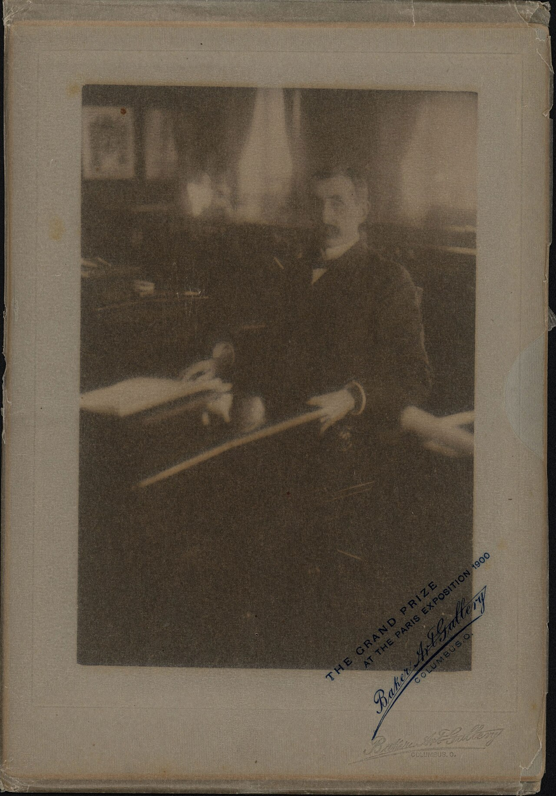
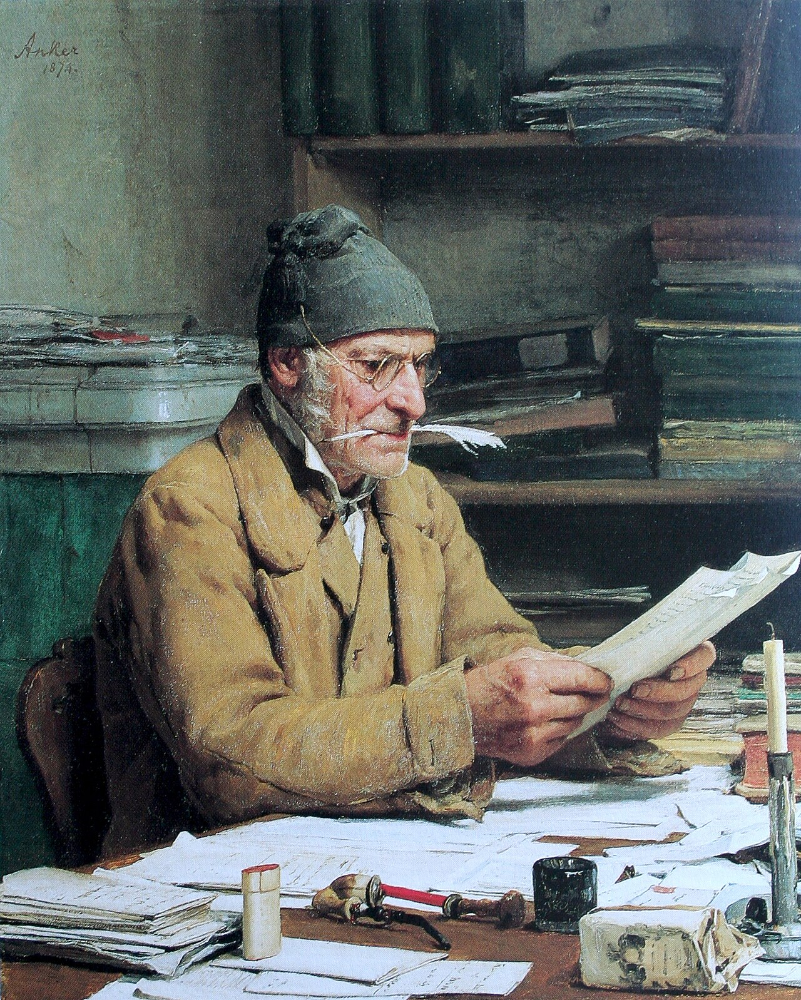
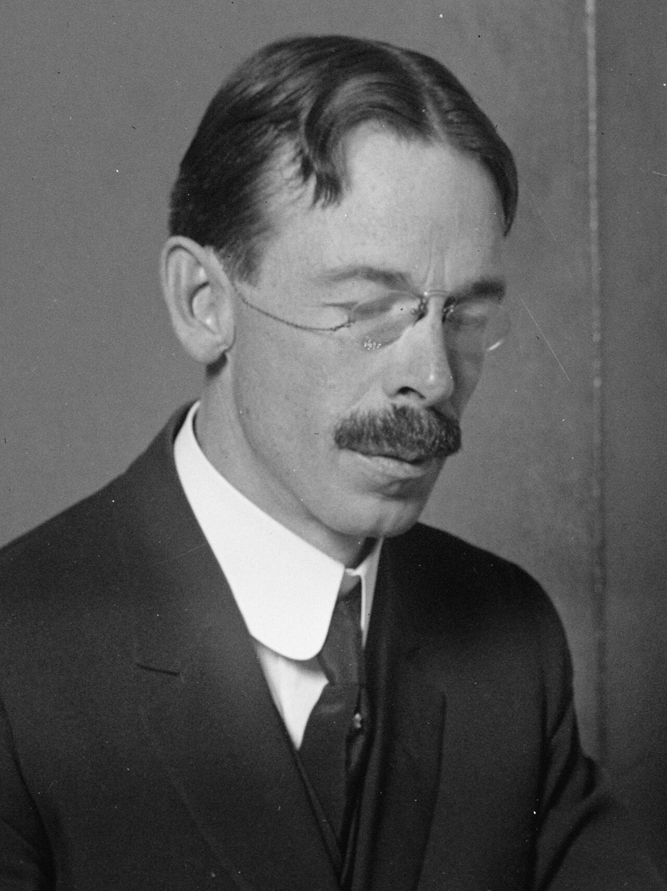
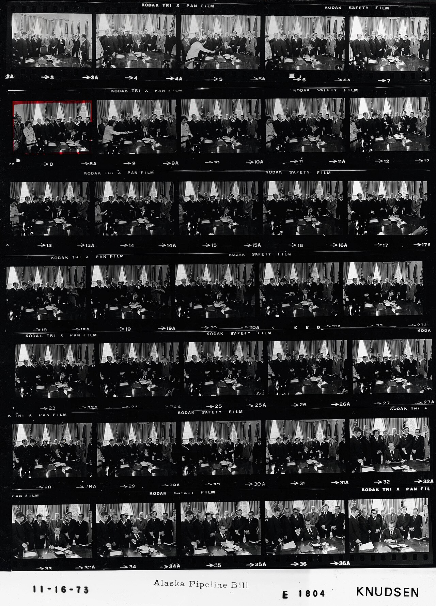
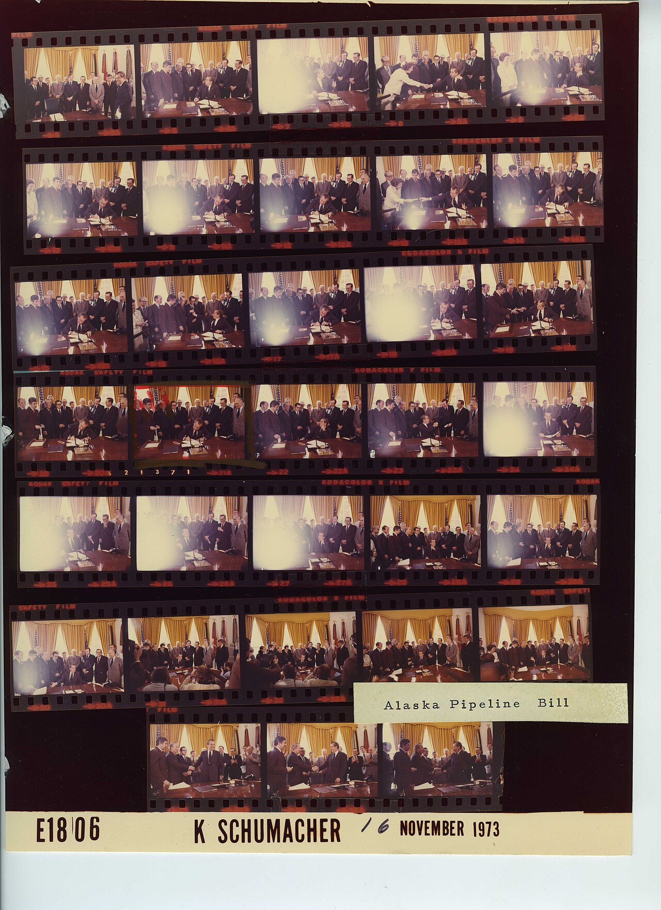
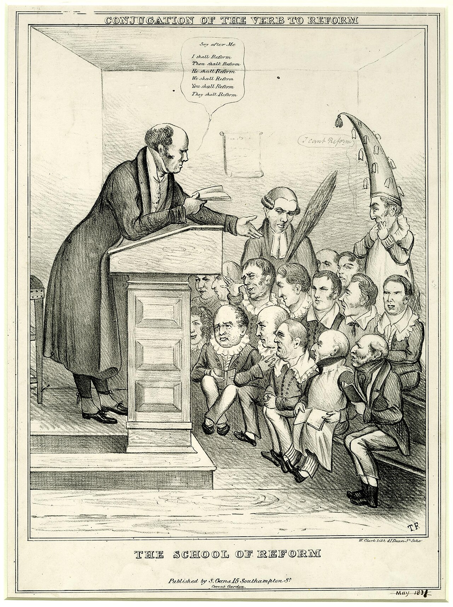
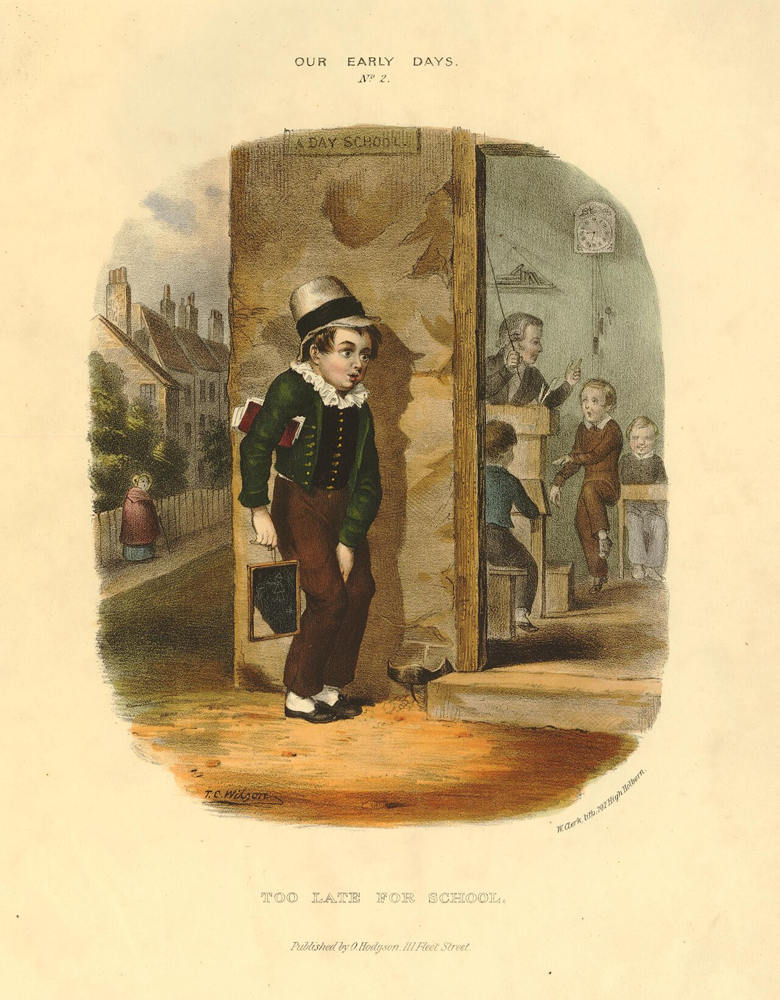
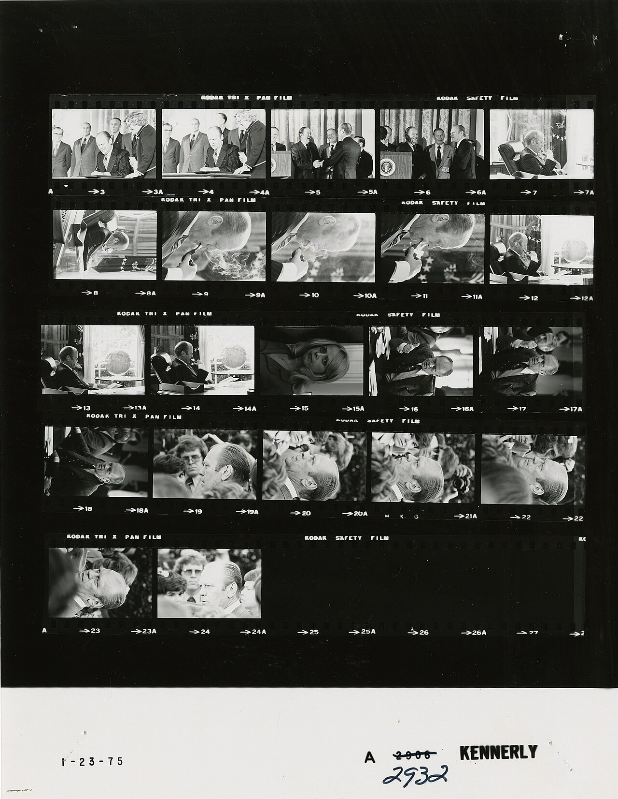
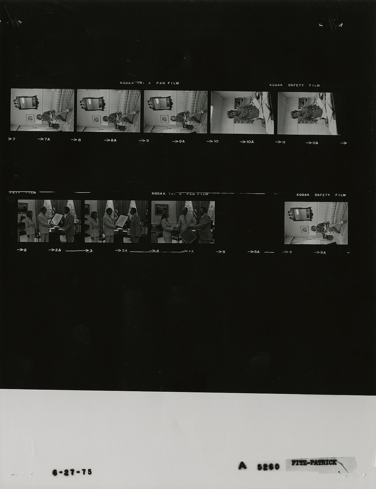
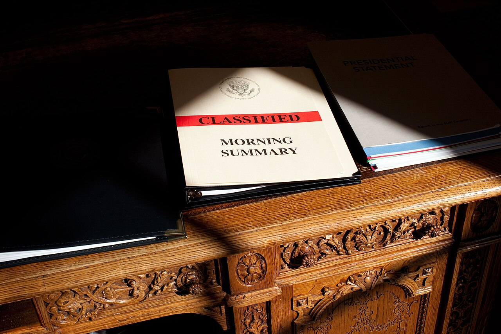

#601 · vertical · vertical · 3178x4368 · Public domain File:A man sitting at a desk - DPLA - 72175da6f2aa769ad2b89866d2b972d3 (page 1).jpg · 1280x1759 https://commons.wikimedia.org/wiki/File:A_man_sitting_at_a_desk_-_DPLA_-_72175da6f2aa769ad2b89866d2b972d3_(page_1).jpg

#602 · vertical · vertical · 3201x4573 · Public domain File:A man sitting at a desk - DPLA - 72175da6f2aa769ad2b89866d2b972d3 (page 2).jpg · 1280x1829 https://commons.wikimedia.org/wiki/File:A_man_sitting_at_a_desk_-_DPLA_-_72175da6f2aa769ad2b89866d2b972d3_(page_2).jpg

#603 · vertical · vertical · 1720x2147 · Public domain File:Anker Der Gemeindeschreiber.jpg Albert Anker · 1280x1598 https://commons.wikimedia.org/wiki/File:Anker_Der_Gemeindeschreiber.jpg

#604 · vertical · vertical · 1917x2558 · Public domain File:Maurice C. Latta (cropped).jpg Harris & Ewing, photographer · 1280x1708 https://commons.wikimedia.org/wiki/File:Maurice_C._Latta_(cropped).jpg

#605 · vertical · vertical · 3079x4278 · Public domain File:Nixon Contact Sheet WHPO-E1804.jpg Robert L. Knudsen · 1280x1778 https://commons.wikimedia.org/wiki/File:Nixon_Contact_Sheet_WHPO-E1804.jpg

#606 · vertical · vertical · 5100x7019 · Public domain File:Nixon Contact Sheet WHPO-E1806.jpg Karl Schumacher · 1280x1762 https://commons.wikimedia.org/wiki/File:Nixon_Contact_Sheet_WHPO-E1806.jpg

#607 · vertical · vertical · 1864x2500 · Public domain File:The School of Reform (BM 1868,0808.9377).jpg Printed by: W & J O Clerk
Published by: S Gans · 1280x1717 https://commons.wikimedia.org/wiki/File:The_School_of_Reform_(BM_1868,0808.9377).jpg

#608 · vertical · vertical · 1950x2500 · Public domain File:Too Late for School (BM 1952,0517.51).jpg Print made by: T C Wilson
Published by: Orlando Hodgson
Printed by: W & J O Clerk · 1280x1641 https://commons.wikimedia.org/wiki/File:Too_Late_for_School_(BM_1952,0517.51).jpg

#609 · vertical · vertical · 1689x2180 · Public domain File:Ford A2932 NLGRF photo contact sheet (1975-01-23)(Gerald Ford Library).jpg David Hume Kennerly · 1280x1652 https://commons.wikimedia.org/wiki/File:Ford_A2932_NLGRF_photo_contact_sheet_(1975-01-23)(Gerald_Ford_Library).jpg

#610 · vertical · vertical · 1684x2189 · Public domain File:Ford A5260 NLGRF photo contact sheet (1975-06-27)(Gerald Ford Library).jpg White House Photographic Office (WHPO) - Fitz-Patrick · 1280x1664 https://commons.wikimedia.org/wiki/File:Ford_A5260_NLGRF_photo_contact_sheet_(1975-06-27)(Gerald_Ford_Library).jpg#611 · vertical · vertical · 1536x2048 · Public domain File:Loss, in first-person view.png Benlisquare · 1280x1707 https://commons.wikimedia.org/wiki/File:Loss,_in_first-person_view.png

#612 · detalle · horizontal · 3500x2333 · Public domain File:Classified document on Resolute desk.jpg Pete Souza · 1280x853 https://commons.wikimedia.org/wiki/File:Classified_document_on_Resolute_desk.jpg